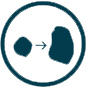
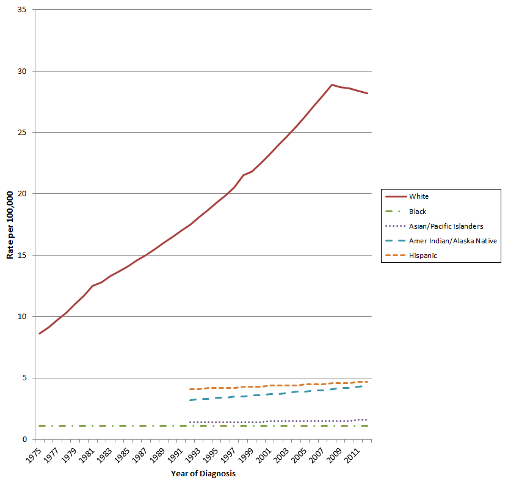

Moles to Melanoma: Recognizing the ABCDE Features
Before You Get Started
To make this resource as useful as possible, please make sure you review and understand the following information.
What is the purpose of this resource?
The National Cancer Institute has collected photographs of 29 different pigmented skin lesions, presented as case series, to help patients and other individuals recognize common moles, dysplastic nevi (DN), and melanomas that started from DN. Each case series shows changes in an individual pigmented lesion (mole) over time and across the various mole changes typically seen in individuals from U.S. melanoma-prone families.
What are moles, dysplastic nevi and melanoma?
- Common Moles - A non-cancerous growth on the skin that is formed by a cluster of melanocytes (cells that make a substance called melanin, which gives color to skin and eyes). A mole may be dark or flesh-colored and may be raised from the skin.
- Dysplastic Nevi (DN) - A type of mole that may develop into a type of skin cancer called malignant melanoma. They look different from common moles. A DN is often larger with borders that are not easy to see. Its color is usually uneven and can range from pink to dark brown. Parts of the mole may be raised above the skin surface.
- Melanoma - A form of cancer that begins in melanocytes (cells that make the pigment melanin). It may begin in a mole (skin melanoma), but can also begin in other pigmented tissues, such as in the eye or in the intestines.
Who is the intended audience?
This resource is intended for patients and others in the lay public. It only includes images of individuals who are at the highest risk of developing melanoma (i.e. Caucasians). Additional information, including resources for other racial and ethnic groups, can be found in the Intended Audience section.
What information does this resource provide?
This resource provides information about and examples of: common moles, dysplastic nevi (atypical moles) and melanoma. This collection does not include any pictures of non-melanoma types of skin cancer (e.g. basal cell or squamous cell). Since they arise from different cell types in the skin, they look very different from melanoma. Additional information, including resources for other types of non-melanoma skin cancer, can be found in the Intended Audience section.
What is the "ABCDE" rule?
The "ABCDE" rule describes the features of early melanoma. These features are:-
Asymmetry - The shape of one half does not match the other half.
-
Border that is irregular - The edges are often ragged, notched, or blurred in outline. The pigment may spread into the surrounding skin.
-
Color that is uneven - Shades of black, brown, and tan may be present. Areas of white, gray, red, pink, or blue may also be seen.
-
Diameter - There is a change in size, usually an increase. Melanomas can be tiny, but most are larger than 6 millimeters wide (about 1/4 inch wide).
-

Evolving - The mole has changed over the past few weeks or months.
View Photographs
Please click on the images below to view examples of moles, dysplastic nevi, and melanoma.
Common Moles
A non-cancerous growth on the skin that is formed by a cluster of melanocytes (cells that make a substance called melanin, which gives color to skin and eyes). A mole may be dark or flesh-colored and may be raised from the skin.
Dysplastic Nevi (DN)
A type of mole that may develop into a type of skin cancer called malignant melanoma. They look different from common moles. A dysplastic nevus is often larger with borders that are not easy to see. Its color is usually uneven and can range from pink to dark brown. Parts of the mole may be raised above the skin surface.
Melanoma
A form of cancer that begins in melanocytes (cells that make the pigment melanin). It may begin in a mole (skin melanoma), but can also begin in other pigmented tissues, such as in the eye or in the intestines.
About the Tool
The Moles to Melanoma Tool presents photographs in three main groups of pigmented lesions: common moles; dysplastic nevi (DN); and melanomas that arose from DN.
The DN section is subdivided into two broad categories: stable and fading, and evolving toward melanoma.
Each case series shows changes in an individual pigmented lesion over a number of years and across the spectrum of changes typically seen in U.S. melanoma-prone families. We include a description of the “ABCDE” features for each type of pigmented lesion (moles, DN, and melanomas). Although the “ABCDE” rules were made for identifying early melanoma, they can also be used to describe DN.
About the Study
For more information about the study from which these cases were identified, please go to: Clinical, Laboratory, and Epidemiologic Characterization of Individuals and Families at High Risk of Melanoma
Publications
- Tucker MA, Fraser MC, Goldstein AM, et al. Melanomas and dysplastic nevi: A natural history atlas. Cancer. 2002 Jun 15;94(12):3192-209.
- Tucker MA, Halpern A, Holly EA, et al. Clinically recognized dysplastic nevi: a central risk factor for cutaneous melanoma. JAMA: The Journal of the American Medical Association 1997; 277(18):1439–1444.
Acknowledgements
We thank the study participants for their many years of participation, their willingness to be photographed during skin examinations, and their generosity in allowing their pictures to be included in this resource.
We would also like to thank John Crawford and Mary King, NIH Clinical Center clinical photographers, for their expertise. The tool would not have been possible without the substantial commitment and cooperation of both the study participants and the clinical photographers.
Who is the Intended Audience?
The photographs in this tool show moles on the skin of participants enrolled in the NCI Familial Melanoma Study. This study only includes individuals in U.S. melanoma-prone families who are at high-risk of developing this form of skin cancer. As shown in Figure 1, Caucasians are at the highest risk of developing melanoma. To date, this study has not identified or enrolled any non-Caucasian families; therefore this tool does not provide images representative of other ethnicities.
Figure 1: Melanoma incidence by race/ethnicity in the U.S. Surveillance, Epidemiology and End Results Program 1975-2012

Reference: Howlader N, Noone AM, Krapcho M, Garshell J, Miller D, Altekruse SF, Kosary CL, Yu M, Ruhl J, Tatalovich Z, Mariotto A, Lewis DR, Chen HS, Feuer EJ, Cronin KA (eds). SEER Cancer Statistics Review, 1975-2012, National Cancer Institute. Bethesda, MD, http://seer.cancer.gov/csr/1975_2012/ , based on November 2014 SEER data submission, posted to the SEER web site, April 2015
Data points are not included for clarity of presentation, but may be found at http://seer.cancer.gov/csr/1975_2012/sections.html Figure 16.2.
Where can I find information on Skin Cancer in other Ethnicities?
- NCI - Anyone Can Get Skin Cancer, includes images of skin cancer in people with darker skin
- Skin Cancer Foundation - Skin Cancer and Skin of Color
Where can I find information about Non-Melanoma Skin Cancer?
This collection does not include any pictures of non-melanoma types of skin cancer (e.g. basal cell or squamous cell), since they arise from different cell types in the skin they look very different from melanoma. For information on those types of skin cancer, visit the following websites: National Cancer Institute - Skin Cancer (including Melanoma) & American Cancer Society - Skin Cancer Facts.
Search Results
Examples

More Information
NCI Skin Cancer (including Melanoma) National Cancer Institute homepage for skin cancer, including melanoma.
Melanoma Risk Assessment Tool An interactive NCI tool to help estimate a person’s risk of developing invasive melanoma.
Anyone Can Get Skin Cancer An NCI brochure developed to dispel the belief that only people with light skin are at risk for skin cancer. Although people with light skin have greater risk than people with darker skin, people with darker skin can also be at risk.
Common Moles, Dysplastic Nevi, and Risk of Melanoma NCI fact sheet on common moles, dysplastic nevi, and melanoma.
INFORMED Skin Cancer Education Series The INternet curriculum FOR Melanoma Early Detection (INFORMED) program provides Web-based early-detection training for widespread use, and training in dermoscopy (epiluminescence microscopy), which has been proven to increase diagnostic accuracy during the skin examination.
Sunscreen on Infants? Not Usually—Shade is Best A pediatrician from the U.S. Food and Drug Administration (FDA) tells how to protect babies from dangerous ultraviolet rays.
Sun Safety: Save Your Skin! Advice from the FDA on how to protect your skin from the sun in all seasons.
NCI Physician Data Query (PDQ) A comprehensive source of cancer information.
Educational Videos
Dear 16-year-old Me A short film of real individuals whose lives have been touched by melanoma, courtesy of the David Cornfield Melanoma Fund.
How the Sun Sees You A short film of people captured in the ultraviolet spectrum, which highlights freckles and sun damage unnoticeable to the naked eye.
Disclaimer
- The pictures used in this tool were taken over more than a 35-year period. They show moles and melanomas from participants enrolled in the NCI Familial Melanoma Study.
- The pictures show examples of the variability in pigmented lesions in U.S. melanoma-prone families.
- Because most of the study participants are Caucasian, the nevi and melanomas shown are not representative of those found in individuals with darker skin.
- Melanomas and lesions suspicious for melanoma vary widely in appearance; these pictures should not be used to diagnose melanoma.
- NCI does not provide medical advice to users of its website.
- Consult with a qualified health care provider if you have concerns about your skin.
About the photos
- The photographs have variations in color due to differences in photography equipment, lighting, and skin color of the individual (e.g. sunburned or suntanned).
- Photographs are standardized to ease viewing.
- Rulers show size of the moles and melanomas in millimeters.
{{currentcase.title}}
- Asymmetry
- Border
- Color
- Diameter
- Evolving
Diagnosis
Disclaimer
- The pictures used in this tool were taken over more than a 35-year period. They show moles and melanomas from participants enrolled in the NCI Familial Melanoma Study.
- The pictures show examples of the variability in pigmented lesions in U.S. melanoma-prone families.
- Because most of the study participants are Caucasian, the nevi and melanomas shown are not representative of those found in individuals with darker skin.
- Melanomas and lesions suspicious for melanoma vary widely in appearance; these pictures should not be used to diagnose melanoma.
- NCI does not provide medical advice to users of its website.
- Consult with a qualified health care provider if you have concerns about your skin.
About the photos
- The photographs have variations in color due to differences in photography equipment, lighting, and skin color of the individual (e.g. sunburned or suntanned).
- Photographs are standardized to ease viewing.
- Rulers show size of the moles and melanomas in millimeters.